MILIASTRA WORKSHOP / EPISODE 09Bring a Blender Box Prop into Miliastra
Edit a supplied eight-box arch, export explicit transforms, convert using the supplied source kit and inspect real native imports in a blank practice scene and a distinct woodland copy.
Keep the starter and edit a separate.blend. Use Object Mode, positive dimensions and zero rotations; export with a useful Game Origin, convert the JSON to a fresh.gia, then import and inspect orientation, colours, relative shape and placement in private play. Source code, exact tested assets and licenses are supplied.
00:3601. What this workflow supports
This supplied adapter supports1–32 explicitly tagged axis-aligned native boxes, not arbitrary FBX/GLB, UVs, textures, bones or animations. Use the eight-object starter to learn the verified route. It does not perform game-side Lua scripting.
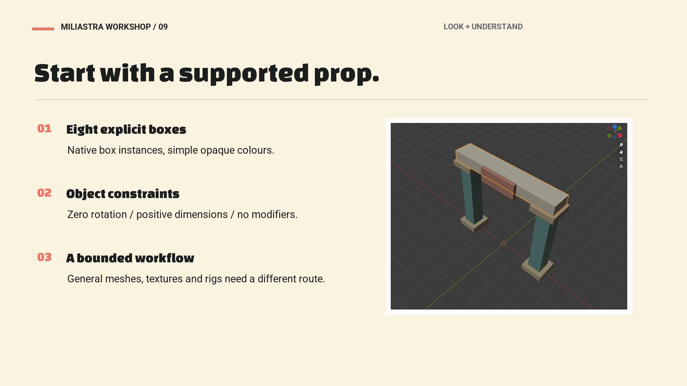
00:5802. Three files with different jobs
A blend file is the editable Blender project. Our JSON file lists the boxes, positions, sizes and colours. The converter writes a G I A file that the game can import as assets. Renaming a blend file doesn't perform that conversion. Keep these three stages distinct so you know which file each application needs.
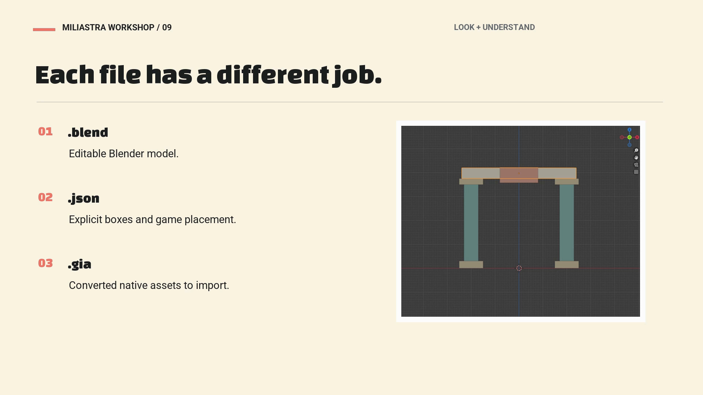
01:1803. Open the supplied starter
Blender4.2.15LTS was recorded. File → Open → Resources/Woodland_Arch_Start.blend. Outliner → Miliastra Boxes. Eight objects are Beam, Plaque, two Posts, two Caps and two Feet, each with the EP09 prefix. The helper is embedded as internal text; it does not auto-run on loading.
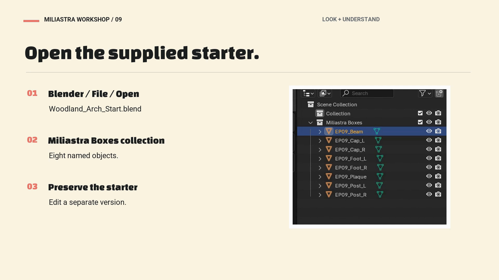
01:3904. Select the beam in Object Mode
Object Mode → Outliner → EP09_Beam. Press N over the3D Viewport if the Transform sidebar is closed. Read Dimensions separately from Scale and Location. The supplied starter uses dimensions4.4,0.8,0.45 for the beam. The game-unit contract is native box scale, not a claim that one Blender metre is one game metre.
Official guide: Blender4.2 Manual / Transform
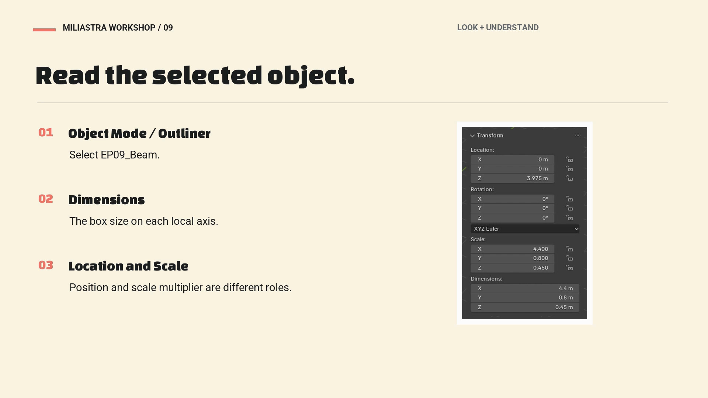
02:0005. Make one visible change
Change only Beam Dimensions X4.4→4.8 in this example. Inspect the front view to confirm it still spans the two posts. You can choose a different width; arbitrary coordinates and size do not need to match the recording.
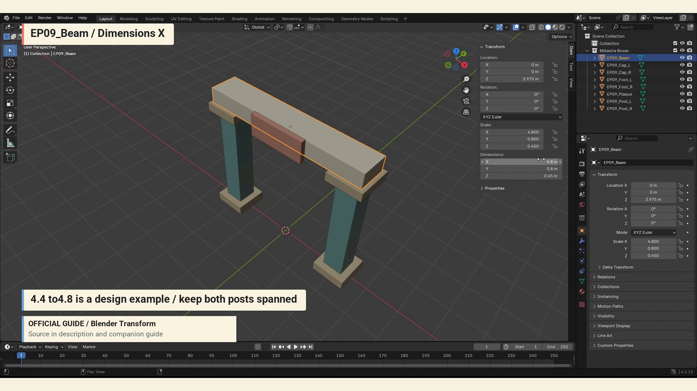
02:1906. Keep the supported box structure
Keep each mesh an eight-corner, six-face box centred on its object origin. Zero object rotation, positive scale/dimensions, no parent or modifiers. The exporter uses obj.dimensions, so applying scale is not required. Unsupported geometry is rejected rather than silently approximated.
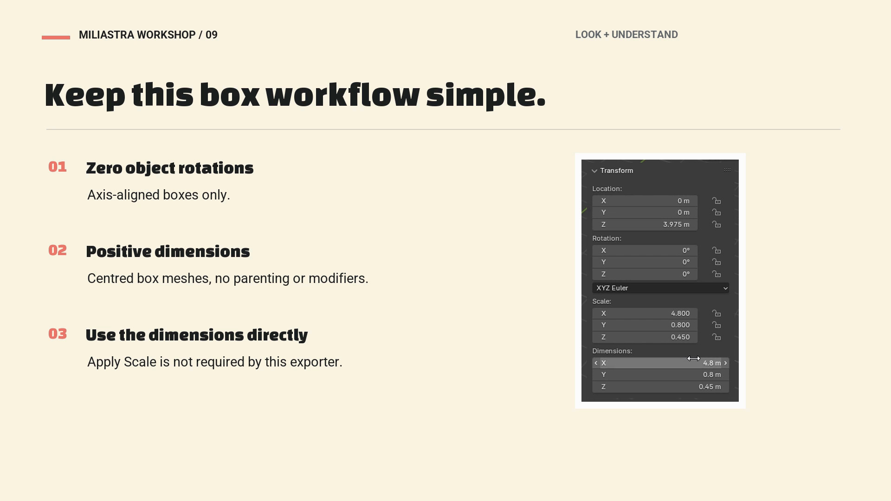
02:3907. Save a distinct Blender version
Use the actual File → Save As menu and choose Woodland_Arch_Final.blend. The original starter4.4 and final4.8 were independently read back. The production save-recovery investigation is not used as teaching footage.
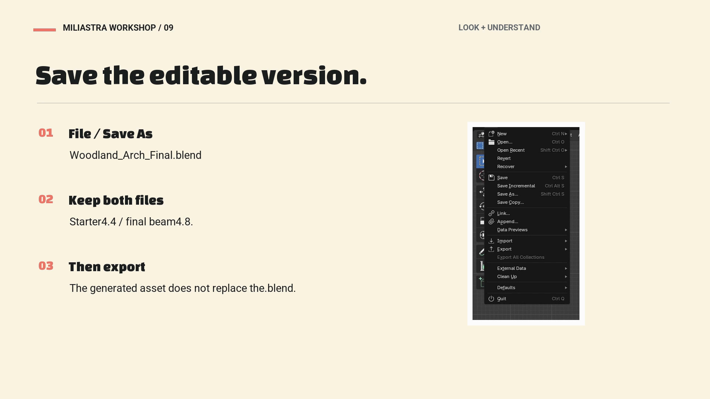
02:5808. Make the export menu available
Scripting → Text Editor → embedded EXPORT_Miliastra_Boxes.py. Review the supplied source, then Run Script (play triangle) once for the Blender session. This adds File → Export → Miliastra Boxes (.json). The maximised-editor view in the lesson is explicitly read-only. Do not enable automatic script running globally for this lesson.
Official guide: Blender4.2 Manual / Text Editor
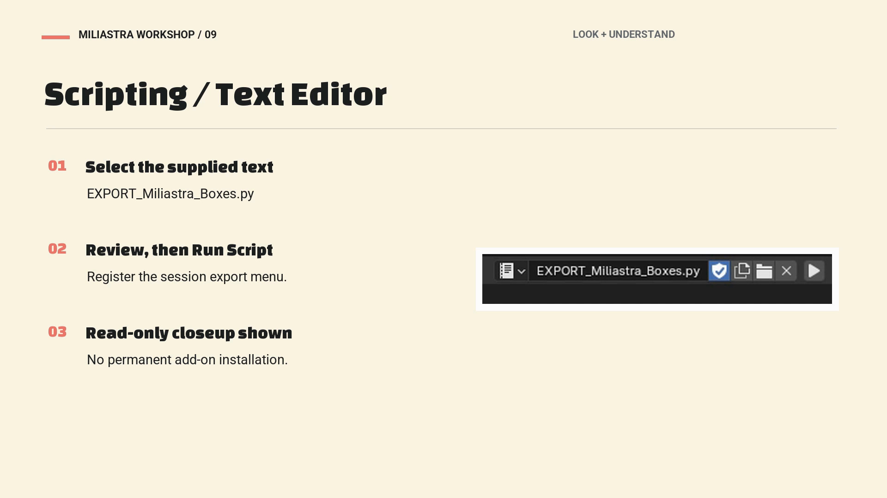
03:2009. Export the explicit box list
Return to File, Export, and choose Miliastra Boxes, JSON.
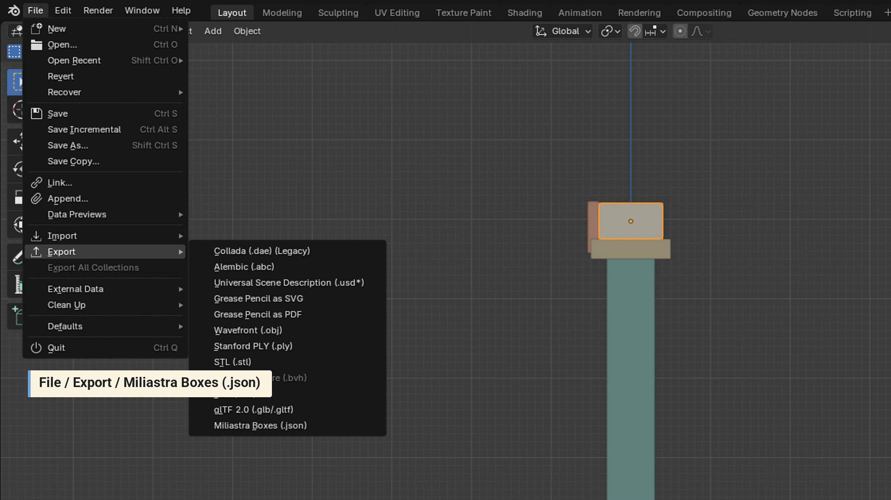
03:2710. Read the filename and Game Origin
Read the filename extension.json and Game Origin X/Y/Z fields. The shown final woodland values are16,0,16. The empty Sandbox test used a separate export at8,0,16. Only necessary native field crops are shown; the original file dialog remains internal.
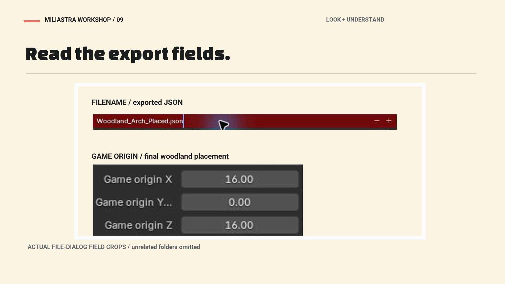
03:4511. Understand the axis conversion
Position mapping: Blender(x,y,z)→game(x,z,-y)+GameOrigin. Dimension mapping:(X,Y,Z)→(X,Z,Y). All rotations are zero. The converter creates native Box template10009001 with opaque object colours; it does not import Blender materials or shaders.
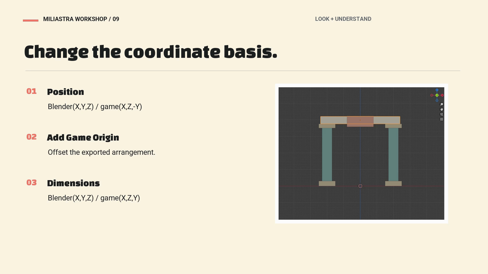
04:0812. Choose space for the whole prop
Initial Final.gia at8,0,16 was checked in an empty Sandbox, then visibly overlapped an existing Arbor in an earlier woodland candidate. A fresh woodland copy received Placed.gia at16,0,16. Only the placement changed; no original scenery was moved. Choose an open area in your own scene.
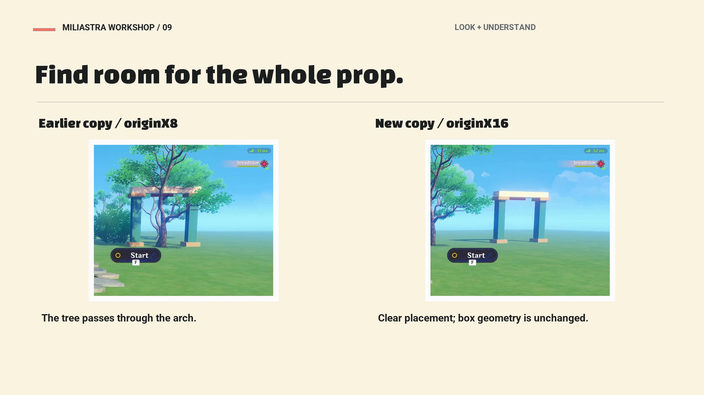
04:3213. Prepare the small converter
Install Python3.14 if needed from https://www.python.org/downloads/windows/ . Extract the Resources folder first. Open PowerShell in Resources/Primitive_Kit, which contains convert_boxes.py, requirements.txt, Template and miliastra_core. Run the first two commands below, one complete line at a time. A local.venv keeps this converter package separate; no activation-script or execution-policy change is required. Fresh reproduction used Python3.14 and protobuf6.33.6.
python -m venv .venv
.\.venv\Scripts\python.exe -m pip install -r requirements.txt
.\.venv\Scripts\python.exe convert_boxes.py ..\Woodland_Arch_Placed.json My_Arch.gia
Official guide: Python3.14 Documentation / venv
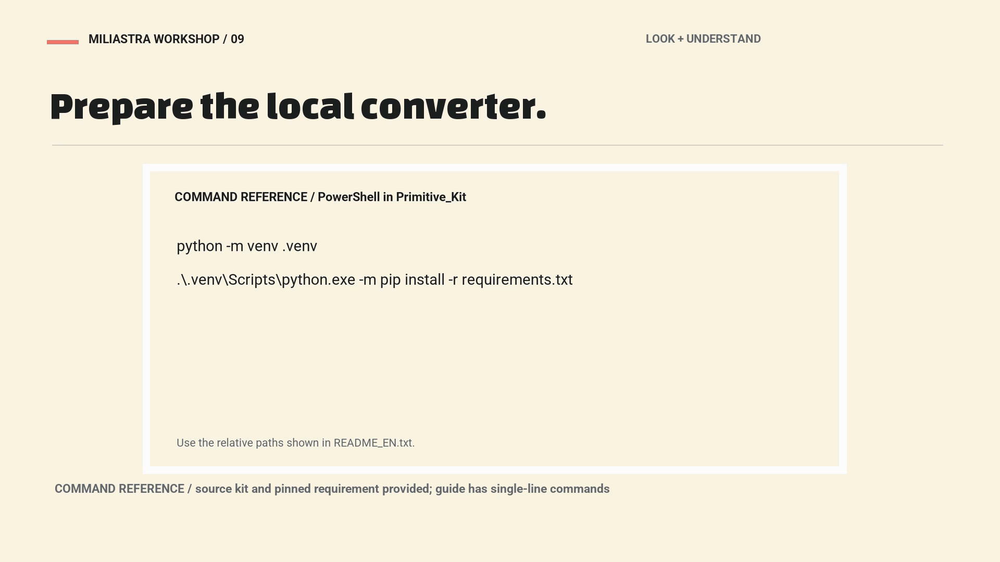
04:5514. Convert the exported JSON
From Primitive_Kit, run the third command above as ONE line. The supplied input JSON is one folder above the kit. If you exported a different file, replace that input path. My_Arch.gia must be a fresh output name. The converter also retains My_Arch.objects.json and My_Arch.readback.json. Keep the source folders and Template/box_template.gia in place.
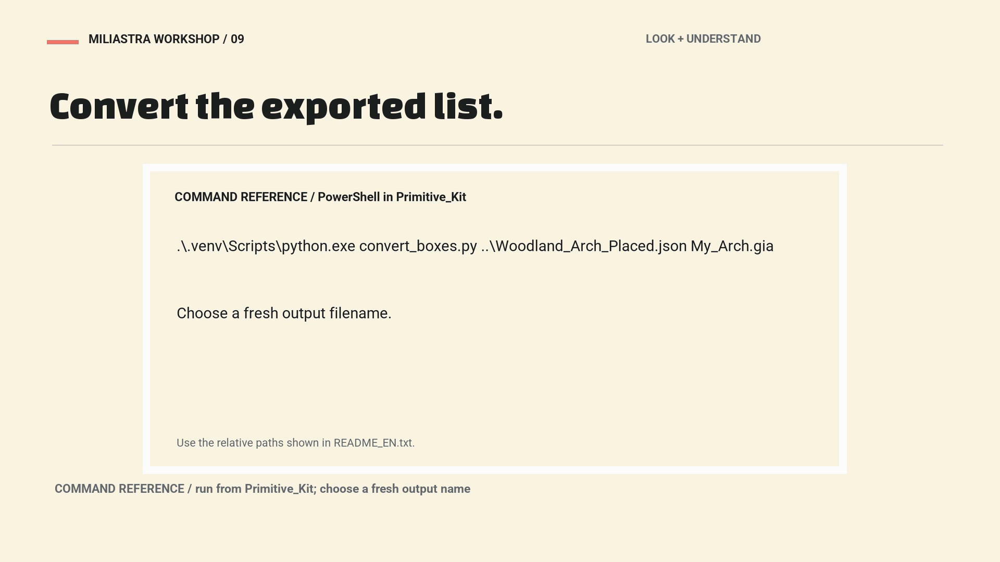
05:1615. Check the conversion report
The real structural report has8 native box records. The exact corresponding source is supplied, including the pre-existing local writer updates listed in SOURCE_NOTICE.json. A second fresh local Python environment reproduced all8 object records; its differently named output has a different container hash because the native container stores the generated filename. Only the canonical Final and Placed assets were imported.
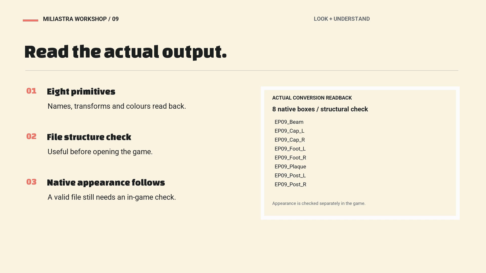
05:3416. Start with an empty practice save
Create an independent Beyond Mode save in Local Save, open it and Quick Save. The source footage begins inside the new empty practice scene; the full save-creation workflow was taught in lesson one. Keep this isolated check separate from your finished woodland.
Official guide: General Knowledge of the Editor / 1.4 Importing and Exporting Saves
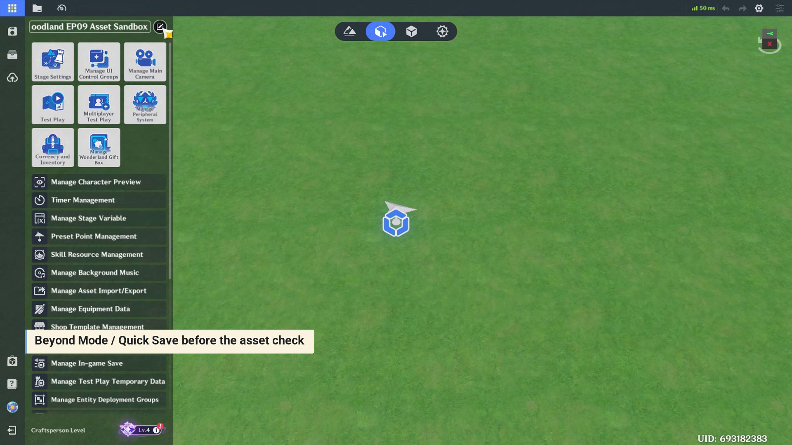
05:5217. Find Import and Transfer
System Menu → Manage Asset Import Export → Import and Transfer → Load External Assets → choose your generated.gia. Read the Asset Pack name. This is different from Local Save → Import Save, which expects the whole-save.gil. The operating-system file chooser is not captured.
Official guide: Interface Guide / Import/Export Assets
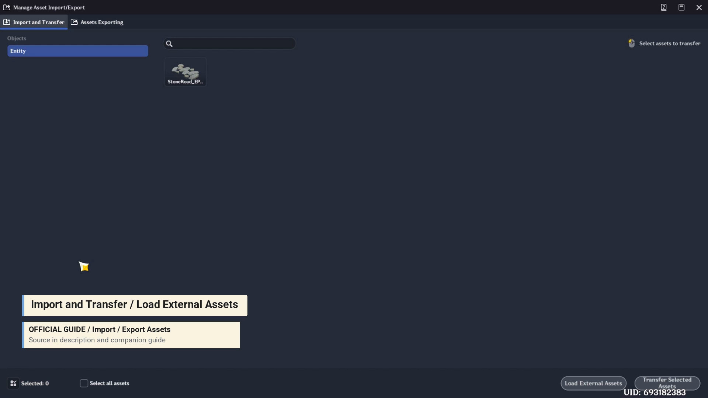
06:1518. Transfer the selected asset pack
Select the intended Asset Pack and use Transfer Selected Assets (wording may vary). Read the Transfer Assets confirmation, including the undo/redo-history notice. Confirm in the fresh practice scene. Assets Exporting → Entity lists eight EP09 objects. Then perform an actual private-play appearance check.
Official guide: Interface Guide / Import/Export Assets
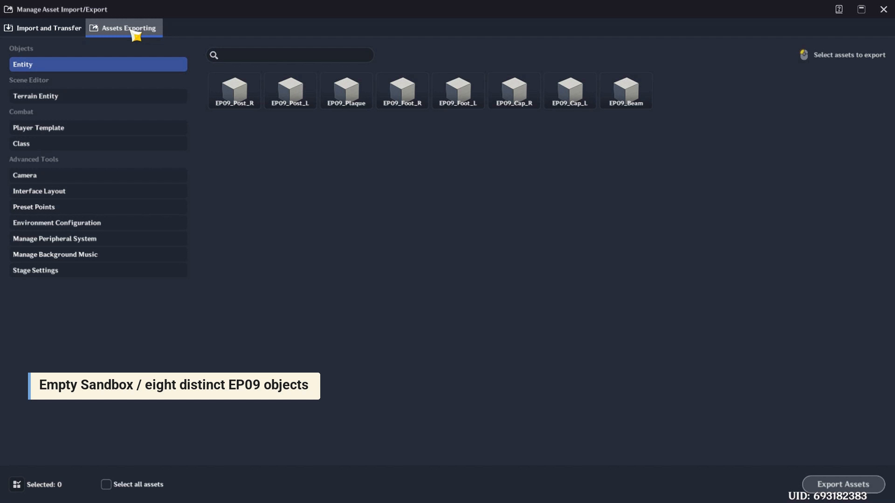
06:3819. Inspect the prop in private play
The exact Woodland_Arch_Final.gia was natively imported in Woodland EP09 Asset Sandbox; eight entities were listed. Private play showed the complete arch, real approach, lateral movement and camera orbit. This does not establish arbitrary-mesh compatibility or a collision penetration test.
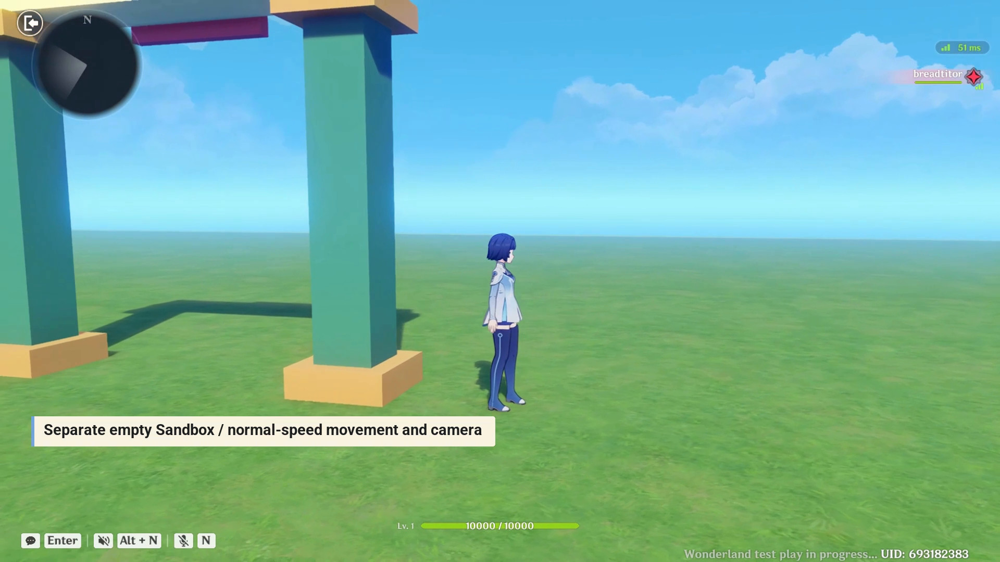
07:0320. Import into a woodland copy
Copy the previously restored woodland into Woodland Workshop EP09 R01 Final. Import Woodland_Arch_Placed.gia. The reference illustrates the resulting placement; the new-card Copy/Rename input itself was not recorded and no fake click is used. Actual private play showed the complete prop clear of the tree, with route, pavilion, five coins and HUD still visible. F was not pressed; this episode does not claim another complete timed challenge run.
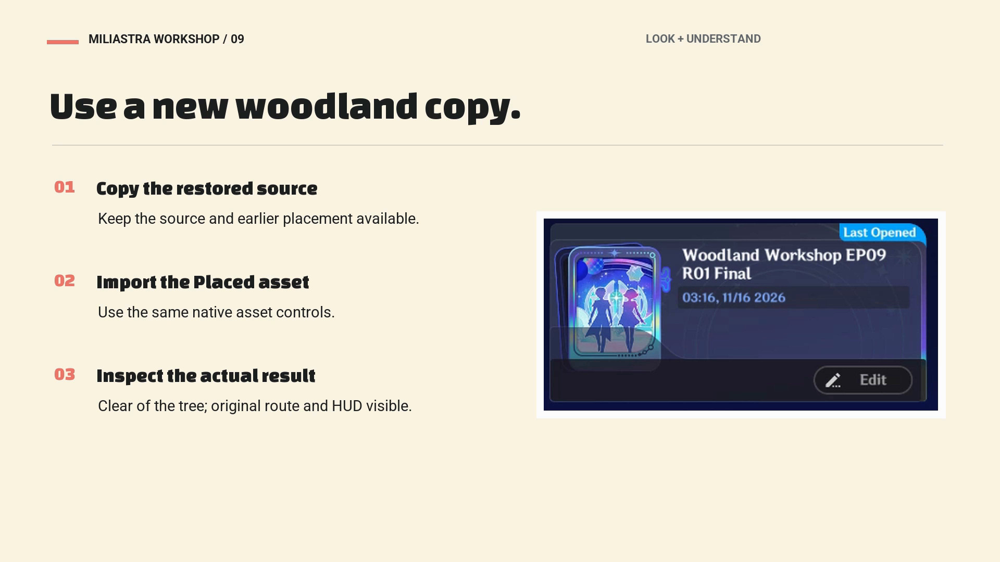
07:2321. Check the placement at player height
Generated boxes are decoration-only: collision and climbing disabled in conversion and structural readback. Their visible native shape and placement were checked, but physical traversal/collision behaviour was not separately accepted. Design and test any intended platform behaviour separately.
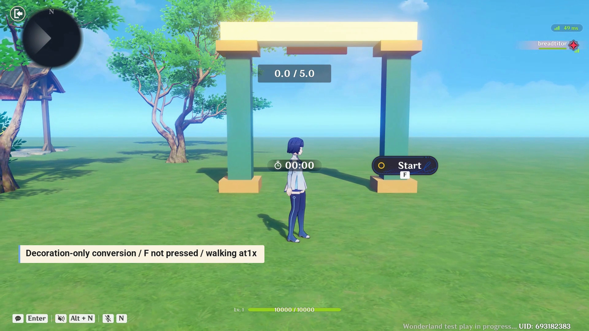
07:4522. Keep a reproducible set of files
Resources include exact Final/Placed JSON and GIA files, starter/final Blender projects, exporter source, complete corresponding converter source, template, full GPL3 license and source notice. Woodland_EP09_R01_Final.gil is an85510-byte final whole-save export; it was not separately reimported.
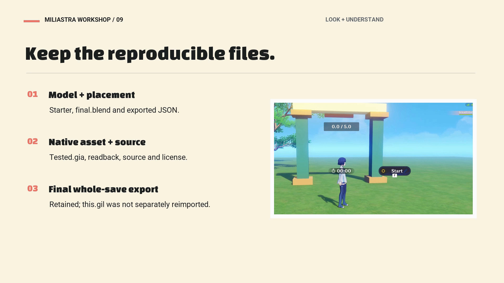
Official references
These explanations use our own words. Native interface labels are shown in the images. A short test covers the actions shown; test the important systems in your own version after changes.